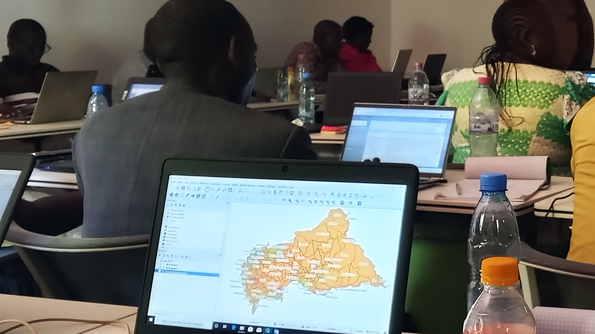
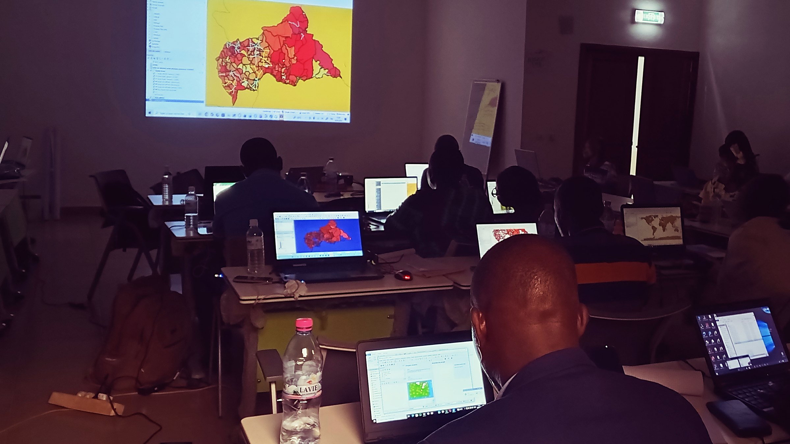
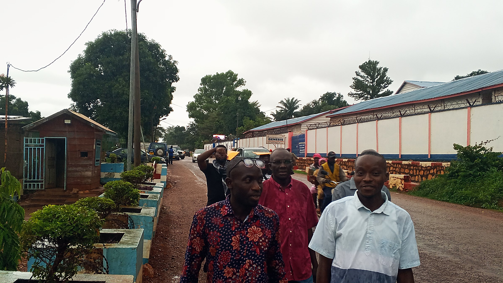
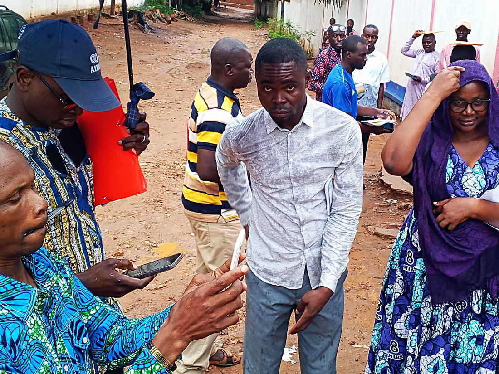
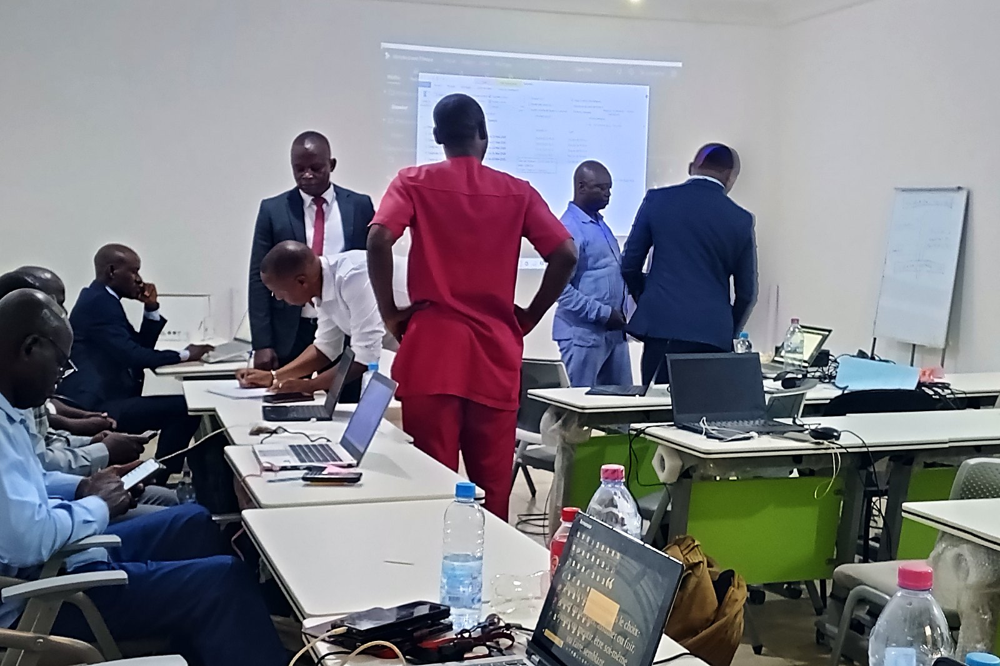
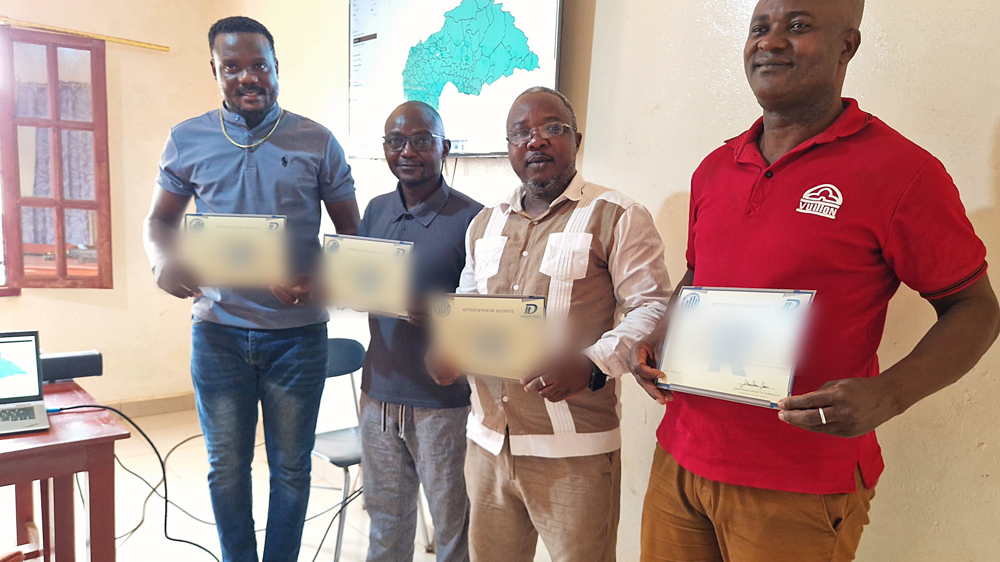

010:00 – 0:052003
Voix off(silence) … Deux mille trois.
Zoom avant très lent sur l’écran. Cinq secondes sans voix : c’est ce silence qui arrête le défilement.

010:00 – 0:05Voix off(silence) … Deux mille trois.
Zoom avant très lent sur l’écran. Cinq secondes sans voix : c’est ce silence qui arrête le défilement.

020:05 – 0:12Voix offL’année du dernier recensement général achevé dans ce pays.
Plan sombre, volontairement. Coupe franche depuis le plan 1.

030:12 – 0:20Voix offDepuis, un plan national de sept mille milliards. Soixante-six cibles de développement durable à mesurer.
Léger travelling latéral gauche → droite. Les chiffres apparaissent l’un après l’autre.
Voix offEt qui, pour faire parler tout cela ?
Pivot de la vidéo. Fondu au blanc de 6 images vers le plan 5 — seule transition non franche du film.
 050:27 – 0:35
050:27 – 0:35
Voix offDix modules. De la problématique au rapport soutenu devant un décideur.
Zoom arrière lent qui révèle toute la promotion. La musique monte d’intensité ici.

060:35 – 0:43Voix offVous ne regardez pas quelqu’un travailler. Vous conduisez votre propre étude.
Deux plans en coupe franche : terrain-3x2 (4 s) puis collecte-4x3 (4 s).


Voix offNeuf logiciels — Kobo, ODK, Excel, SPSS, Stata, R, QGIS. Installés sur votre ordinateur.
Apparition en cascade, 3 images d’écart entre chaque icône.

080:50 – 0:57Voix offTrois ingénieurs statisticiens vous encadrent. L’un d’eux a dirigé l’enquête nationale sur les conditions de vie des ménages.
Plan le plus important pour la crédibilité : ne pas le raccourcir au montage.
Voix offDeux formules. Étudiants le jour, professionnels le soir. En présentiel ou sur Zoom.
Les deux blocs arrivent l’un après l’autre, 1,5 s d’écart. Prix barrés visibles.

101:05 – 1:12Voix offTrente places. Les inscriptions ferment le dix-huit août.
Zoom avant très lent sur les attestations. C’est LA preuve sociale du film : des gens qui ont fini, pas un argument. Noms floutés à la source.

Voix offÉcrivez-nous.
Le numéro reste à l’écran 3 s pleines. Code QR à tester sur un vrai téléphone avant publication.
Rappels de montage
Coupe franche partout, sauf un fondu au blanc entre les plans 4 et 5.
La vidéo doit se comprendre son coupé : tout ce qui est dit est écrit.
Filet de marque à cinq couleurs en bas de cadre, du début à la fin.
Trois exports : 16/9 (75 s), carré (75 s), vertical (30 s — plans 1, 4, 5, 9, 10, 11).